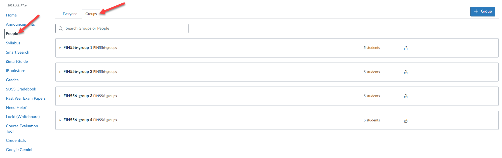

One-time setup.
Start here.
Prepare your terminal, tools, and course materials.
Then find your group and confirm you’re ready.
TERMINAL + GITDOCKER + EDITORCOURSE + GROUP
Prepare your terminal, tools, and course materials.
Then find your group and confirm you’re ready.
Allow time for downloads and any required restarts.
For the remaining steps, “terminal” means Ubuntu on Windows/WSL2 or Terminal on macOS.
$ uname -mIntel or AMD computer.
Choose x64 software, or the Intel build on macOS.
ARM64 computer.
Choose ARM64 software; Apple Silicon on macOS.
Run this in Ubuntu on Windows, or a native Terminal session on macOS.
Git is required to download and update the course repository.
$ sudo apt update $ sudo apt install -y git $ git --version
Git for Windows and Git inside WSL are separate installations.
In Ubuntu, locate GCM before setting the helper.
$ find "/mnt/c/Program Files/Git" \
-name 'git-credential-manager.exe' 2>/dev/null| Git for Windows | Folder inside C:\Program Files\Git |
|---|---|
| x64, v2.56.0 or later | ucrt64\bin |
| x64, v2.55.x or earlier | mingw64\bin |
| ARM64 | clangarm64\bin |
If no executable is found, rerun the installer with GCM enabled.
Example for a newer x64 installation:
$ git config --global credential.helper \ "/mnt/c/Program\ Files/Git/ucrt64/bin/git-credential-manager.exe" $ "/mnt/c/Program Files/Git/ucrt64/bin/git-credential-manager.exe" --version
Replace ucrt64 with the folder you found. Keep the escaping shown in the helper command.
$ git --versionYou can continue to Docker Desktop.
Start Docker Desktop, then run these commands in your terminal.
$ docker --version $ docker run --rm hello-world
The first command prints the Docker CLI version.
The second confirms that Docker can download and run a container.
$ cd ~ $ mkdir -p courses $ cd courses $ git clone https://github.com/RoyLai-InfoCorp/FIN556.git $ cd FIN556 $ ls
Confirm that day-0 appears in the output. Use FIN556 consistently for the local directory name.
Sign in to Canvas and open your course site.
Identify your assigned group.
The course guide specifies a maximum of five members per group.

Confirm that your environment is ready for class.
Full name
Student identification number
Operating system: Windows, macOS, or other
Assigned Canvas group
Next, follow the weekly setup guide to open the dev container
and verify the course tools.
Open the weekly setup presentation →
Update materials → Open VS Code → Reopen in Container → Verify tools.